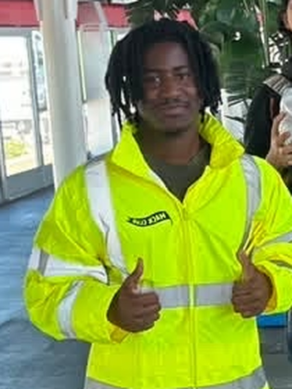

hello!! dhamari here!!
i'm a first-year computer engineering student at kettering university and the founder of testbed, which builds release-safety software for robot fleets. i like building things that have to work in the real world.
what i'm doing now: studying computer engineering at kettering university (b section, co-op jan to mar 2027). building testbed, release-safety software for robot fleets. building joobie, a cold-gas thruster rig that's my first project mixing mechanical and electrical engineering.
what i did before: took a gap year as an engineer at hack club, where i built and maintained open-source production codebases, owned programs end to end, and founded and ran a 50-person project review team. programmer and driver on first robotics team 3632 (2025 rookie all-star). 2025 skillsusa electronics state gold medalist.
where to find me when i'm not at a keyboard: at the gym, or around kettering's rocket club (karo).
on my mind lately:
want to say hi?
you can find me on github.com/dhamariT or over at testbed.engineering